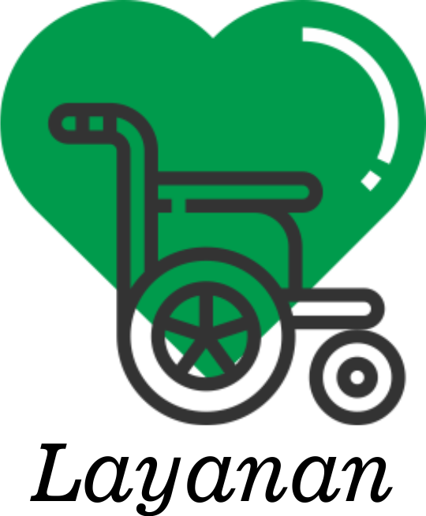

|

|
Layanan yang diberikan: |
1. Rawat Inap
2. Rawat Jalan
3. Medical Check Up (MCU)
4. Layanan 24 Jam
|
Rawat Inap
Rawat inap merupakan salah satu layanan yang terdapat di semua unit rumah sakit Rumah Sakit Sehat. Meski fasilitas yang ditawarkan oleh masing-masing unit memiliki perbedaan, namun fasilitas yang ditawarkan oleh layanan rawat inap di setiap unit rumah sakit Rumah Sakit Sehat telah dirancang untuk dapat memberikan kenyamanan terbaik bagi para pasien.
Kamar maupun ruangan yang disediakan beragam. Mulai dari kamar kelas VVIP, VVIP Anak, VIP, VIP ANAK, 1 PLUS, 1, 2, 3, dan Kamar Bayi, hingga ruangan ICU / ICCU / HCU yang berfungsi untuk memberikan perawatan khusus pada penderita yang memerlukan perawatan yang lebih intensif, juga ruangan Perinatologi / NICU / PICU yang merupakan ruang rawat inap bagi bayi - bayi baru lahir yang membutuhkan perawatan khusus di Rumah Sakit.
Rawat Jalan
Layanan Rawat Jalan di Rumah Sakit Sehat terbagi menjadi 4 layanan utama, yakni Poliklinik, Rehabilitasi Medik, Hemodialisa dan Dental Health & Aesthetic Clinic.
Pada layanan Poliklinik, Anda dapat mengobati berbagai gangguan kesehatan mulai dari kesehatan anak, penyakit dalam, syaraf, kulit & kelamin, psikologi, gizi dan berbagai gangguan kesehatan lainnya.
Layanan Rehabilitasi Medik (Fisioterapi) Rumah Sakit Sehat merupakan pelayanan kesehatan yang ditujukan terhadap Anda yang mengalami gangguan fisik dan fungsional yang diakibatkan oleh keadaan atau kondisi sakit, penyakit atau cedera melalui panduan intervensi medis, keterapian fisik dan atau rehabilitatif untuk mencapai kemampuan fungsi yang optimal.
Jika Anda merupakan pasien yang membutuhkan layanan proses pembersihan darah oleh akumulasi sampah buangan, Rumah Sakit Sehat juga memiliki layanan tersebut pada layanan Hemodialisa. Sedangkan untuk Anda yang ingin memiliki gigi sehat dan estetis, Rumah Sakit Sehat menyediakan layanan Dental Health & Aesthetic Clinic yang didukung oleh teknologi modern dan spesialisasi kedokteran gigi yang lengkap.
Medical Check Up (MCU)
Mencegah lebih baik daripada mengobati. Kesehatan Anda adalah sesuatu yang tak ternilai harganya. Kesehatan harus Anda jaga sebaik mungkin sebelum penyakit menggerogoti berbagai aspek kehidupan Anda. Sebagai langkah pencegahan, lakukanlah Medical Check Up (MCU) untuk mengetahui kondisi kesehatan Anda, sekaligus mendeteksi suatu penyakit sejak dini.
Rumah Sakit Sehat menawarkan berbagai paket Medical Check Up yang sesuai dengan kebutuhan kesehatan Anda. Dengan teknologi modern dan tenaga profesional yang sudah berpengalaman di bidangnya, layanan Medical Check Up Rumah Sakit Sehat siap memberikan yang terbaik untuk kesehatan Anda.
Layanan 24 Jam
Rumah Sakit Sehat dilengkapi dengan berbagai layanan yang siap melayani Anda selama 24 jam tanpa henti. Ada layanan Laboratorium yang melayani permintaan pemeriksaan dari internal maupun rujukan dari luar Rumah Sakit Sehat dan ada juga Instalasi Gawat Darurat (IGD), yang siap melayani pasien dengan ketersediaan dokter IGD dan paramedik setiap saat.
Selain Laboratorium dan IGD, ada juga layanan lainnya seperti, Ambulans yang dilengkapi dengan paramedik dan berbagai fasilitas untuk pertolongan terhadap pasien dalam perjalanan, layanan Farmasi dengan apoteker-apoteker profesional dan kompeten di bidangnya, dan juga layanan Radiologi yang merupakan sarana penunjang medis untuk membantu dokter dalam merawat pasien dengan memberikan pelayanan pencitraan diagnostik (Diagnostic Imaging).
|